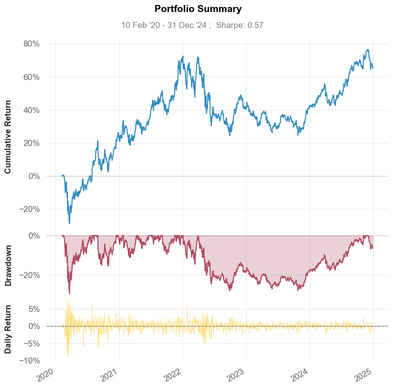
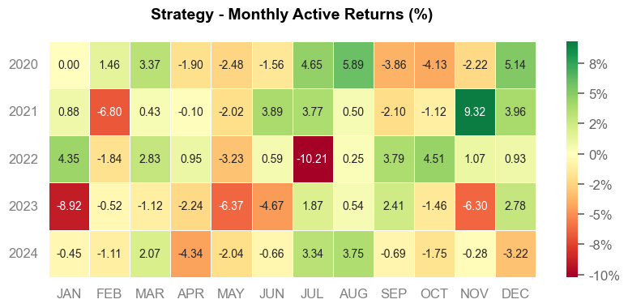

04. Ken French Data and Pandas DataReader#
Pandas DataReader is a powerful tool that provides easy access to various financial data sources through a consistent API. The Ken French Data Library, accessible through pandas_datareader, offers a comprehensive collection of:
Historical stock returns organized into various portfolios
Risk factors (like market, size, value, momentum)
Pre-calculated research datasets commonly used in empirical asset pricing
In this notebook, we’ll explore how to access and use these datasets using pandas_datareader.
Browsing the Data#
First, let’s see what datasets are available:
import warnings
import pandas as pd
from pandas_datareader.famafrench import get_available_datasets
import pandas_datareader.data as web
len(get_available_datasets())
297
get_available_datasets()
['F-F_Research_Data_Factors',
'F-F_Research_Data_Factors_weekly',
'F-F_Research_Data_Factors_daily',
'F-F_Research_Data_5_Factors_2x3',
'F-F_Research_Data_5_Factors_2x3_daily',
'Portfolios_Formed_on_ME',
'Portfolios_Formed_on_ME_Wout_Div',
'Portfolios_Formed_on_ME_Daily',
'Portfolios_Formed_on_BE-ME',
'Portfolios_Formed_on_BE-ME_Wout_Div',
'Portfolios_Formed_on_BE-ME_Daily',
'Portfolios_Formed_on_OP',
'Portfolios_Formed_on_OP_Wout_Div',
'Portfolios_Formed_on_OP_Daily',
'Portfolios_Formed_on_INV',
'Portfolios_Formed_on_INV_Wout_Div',
'Portfolios_Formed_on_INV_Daily',
'6_Portfolios_2x3',
'6_Portfolios_2x3_Wout_Div',
'6_Portfolios_2x3_weekly',
'6_Portfolios_2x3_daily',
'25_Portfolios_5x5',
'25_Portfolios_5x5_Wout_Div',
'25_Portfolios_5x5_Daily',
'100_Portfolios_10x10',
'100_Portfolios_10x10_Wout_Div',
'100_Portfolios_10x10_Daily',
'6_Portfolios_ME_OP_2x3',
'6_Portfolios_ME_OP_2x3_Wout_Div',
'6_Portfolios_ME_OP_2x3_daily',
'25_Portfolios_ME_OP_5x5',
'25_Portfolios_ME_OP_5x5_Wout_Div',
'25_Portfolios_ME_OP_5x5_daily',
'100_Portfolios_ME_OP_10x10',
'100_Portfolios_10x10_ME_OP_Wout_Div',
'100_Portfolios_ME_OP_10x10_daily',
'6_Portfolios_ME_INV_2x3',
'6_Portfolios_ME_INV_2x3_Wout_Div',
'6_Portfolios_ME_INV_2x3_daily',
'25_Portfolios_ME_INV_5x5',
'25_Portfolios_ME_INV_5x5_Wout_Div',
'25_Portfolios_ME_INV_5x5_daily',
'100_Portfolios_ME_INV_10x10',
'100_Portfolios_10x10_ME_INV_Wout_Div',
'100_Portfolios_ME_INV_10x10_daily',
'25_Portfolios_BEME_OP_5x5',
'25_Portfolios_BEME_OP_5x5_Wout_Div',
'25_Portfolios_BEME_OP_5x5_daily',
'25_Portfolios_BEME_INV_5x5',
'25_Portfolios_BEME_INV_5x5_Wout_Div',
'25_Portfolios_BEME_INV_5x5_daily',
'25_Portfolios_OP_INV_5x5',
'25_Portfolios_OP_INV_5x5_Wout_Div',
'25_Portfolios_OP_INV_5x5_daily',
'32_Portfolios_ME_BEME_OP_2x4x4',
'32_Portfolios_ME_BEME_OP_2x4x4_Wout_Div',
'32_Portfolios_ME_BEME_INV_2x4x4',
'32_Portfolios_ME_BEME_INV_2x4x4_Wout_Div',
'32_Portfolios_ME_OP_INV_2x4x4',
'32_Portfolios_ME_OP_INV_2x4x4_Wout_Div',
'Portfolios_Formed_on_E-P',
'Portfolios_Formed_on_E-P_Wout_Div',
'Portfolios_Formed_on_CF-P',
'Portfolios_Formed_on_CF-P_Wout_Div',
'Portfolios_Formed_on_D-P',
'Portfolios_Formed_on_D-P_Wout_Div',
'6_Portfolios_ME_EP_2x3',
'6_Portfolios_ME_EP_2x3_Wout_Div',
'6_Portfolios_ME_CFP_2x3',
'6_Portfolios_ME_CFP_2x3_Wout_Div',
'6_Portfolios_ME_DP_2x3',
'6_Portfolios_ME_DP_2x3_Wout_Div',
'F-F_Momentum_Factor',
'F-F_Momentum_Factor_daily',
'6_Portfolios_ME_Prior_12_2',
'6_Portfolios_ME_Prior_12_2_Daily',
'25_Portfolios_ME_Prior_12_2',
'25_Portfolios_ME_Prior_12_2_Daily',
'10_Portfolios_Prior_12_2',
'10_Portfolios_Prior_12_2_Daily',
'F-F_ST_Reversal_Factor',
'F-F_ST_Reversal_Factor_daily',
'6_Portfolios_ME_Prior_1_0',
'6_Portfolios_ME_Prior_1_0_Daily',
'25_Portfolios_ME_Prior_1_0',
'25_Portfolios_ME_Prior_1_0_Daily',
'10_Portfolios_Prior_1_0',
'10_Portfolios_Prior_1_0_Daily',
'F-F_LT_Reversal_Factor',
'F-F_LT_Reversal_Factor_daily',
'6_Portfolios_ME_Prior_60_13',
'6_Portfolios_ME_Prior_60_13_Daily',
'25_Portfolios_ME_Prior_60_13',
'25_Portfolios_ME_Prior_60_13_Daily',
'10_Portfolios_Prior_60_13',
'10_Portfolios_Prior_60_13_Daily',
'Portfolios_Formed_on_AC',
'25_Portfolios_ME_AC_5x5',
'Portfolios_Formed_on_BETA',
'25_Portfolios_ME_BETA_5x5',
'Portfolios_Formed_on_NI',
'25_Portfolios_ME_NI_5x5',
'Portfolios_Formed_on_VAR',
'25_Portfolios_ME_VAR_5x5',
'Portfolios_Formed_on_RESVAR',
'25_Portfolios_ME_RESVAR_5x5',
'5_Industry_Portfolios',
'5_Industry_Portfolios_Wout_Div',
'5_Industry_Portfolios_daily',
'10_Industry_Portfolios',
'10_Industry_Portfolios_Wout_Div',
'10_Industry_Portfolios_daily',
'12_Industry_Portfolios',
'12_Industry_Portfolios_Wout_Div',
'12_Industry_Portfolios_daily',
'17_Industry_Portfolios',
'17_Industry_Portfolios_Wout_Div',
'17_Industry_Portfolios_daily',
'30_Industry_Portfolios',
'30_Industry_Portfolios_Wout_Div',
'30_Industry_Portfolios_daily',
'38_Industry_Portfolios',
'38_Industry_Portfolios_Wout_Div',
'38_Industry_Portfolios_daily',
'48_Industry_Portfolios',
'48_Industry_Portfolios_Wout_Div',
'48_Industry_Portfolios_daily',
'49_Industry_Portfolios',
'49_Industry_Portfolios_Wout_Div',
'49_Industry_Portfolios_daily',
'ME_Breakpoints',
'BE-ME_Breakpoints',
'OP_Breakpoints',
'INV_Breakpoints',
'E-P_Breakpoints',
'CF-P_Breakpoints',
'D-P_Breakpoints',
'Prior_2-12_Breakpoints',
'Developed_3_Factors',
'Developed_3_Factors_Daily',
'Developed_ex_US_3_Factors',
'Developed_ex_US_3_Factors_Daily',
'Europe_3_Factors',
'Europe_3_Factors_Daily',
'Japan_3_Factors',
'Japan_3_Factors_Daily',
'Asia_Pacific_ex_Japan_3_Factors',
'Asia_Pacific_ex_Japan_3_Factors_Daily',
'North_America_3_Factors',
'North_America_3_Factors_Daily',
'Developed_5_Factors',
'Developed_5_Factors_Daily',
'Developed_ex_US_5_Factors',
'Developed_ex_US_5_Factors_Daily',
'Europe_5_Factors',
'Europe_5_Factors_Daily',
'Japan_5_Factors',
'Japan_5_Factors_Daily',
'Asia_Pacific_ex_Japan_5_Factors',
'Asia_Pacific_ex_Japan_5_Factors_Daily',
'North_America_5_Factors',
'North_America_5_Factors_Daily',
'Developed_Mom_Factor',
'Developed_Mom_Factor_Daily',
'Developed_ex_US_Mom_Factor',
'Developed_ex_US_Mom_Factor_Daily',
'Europe_Mom_Factor',
'Europe_Mom_Factor_Daily',
'Japan_Mom_Factor',
'Japan_Mom_Factor_Daily',
'Asia_Pacific_ex_Japan_MOM_Factor',
'Asia_Pacific_ex_Japan_MOM_Factor_Daily',
'North_America_Mom_Factor',
'North_America_Mom_Factor_Daily',
'Developed_6_Portfolios_ME_BE-ME',
'Developed_6_Portfolios_ME_BE-ME_daily',
'Developed_ex_US_6_Portfolios_ME_BE-ME',
'Developed_ex_US_6_Portfolios_ME_BE-ME_daily',
'Europe_6_Portfolios_ME_BE-ME',
'Europe_6_Portfolios_ME_BE-ME_daily',
'Japan_6_Portfolios_ME_BE-ME',
'Japan_6_Portfolios_ME_BE-ME_daily',
'Asia_Pacific_ex_Japan_6_Portfolios_ME_BE-ME',
'Asia_Pacific_ex_Japan_6_Portfolios_ME_BE-ME_daily',
'North_America_6_Portfolios_ME_BE-ME',
'North_America_6_Portfolios_ME_BE-ME_daily',
'Developed_25_Portfolios_ME_BE-ME',
'Developed_25_Portfolios_ME_BE-ME_daily',
'Developed_ex_US_25_Portfolios_ME_BE-ME',
'Developed_ex_US_25_Portfolios_ME_BE-ME_daily',
'Europe_25_Portfolios_ME_BE-ME',
'Europe_25_Portfolios_ME_BE-ME_daily',
'Japan_25_Portfolios_ME_BE-ME',
'Japan_25_Portfolios_ME_BE-ME_daily',
'Asia_Pacific_ex_Japan_25_Portfolios_ME_BE-ME',
'Asia_Pacific_ex_Japan_25_Portfolios_ME_BE-ME_daily',
'North_America_25_Portfolios_ME_BE-ME',
'North_America_25_Portfolios_ME_BE-ME_daily',
'Developed_6_Portfolios_ME_OP',
'Developed_6_Portfolios_ME_OP_Daily',
'Developed_ex_US_6_Portfolios_ME_OP',
'Developed_ex_US_6_Portfolios_ME_OP_Daily',
'Europe_6_Portfolios_ME_OP',
'Europe_6_Portfolios_ME_OP_Daily',
'Japan_6_Portfolios_ME_OP',
'Japan_6_Portfolios_ME_OP_Daily',
'Asia_Pacific_ex_Japan_6_Portfolios_ME_OP',
'Asia_Pacific_ex_Japan_6_Portfolios_ME_OP_Daily',
'North_America_6_Portfolios_ME_OP',
'North_America_6_Portfolios_ME_OP_Daily',
'Developed_25_Portfolios_ME_OP',
'Developed_25_Portfolios_ME_OP_Daily',
'Developed_ex_US_25_Portfolios_ME_OP',
'Developed_ex_US_25_Portfolios_ME_OP_Daily',
'Europe_25_Portfolios_ME_OP',
'Europe_25_Portfolios_ME_OP_Daily',
'Japan_25_Portfolios_ME_OP',
'Japan_25_Portfolios_ME_OP_Daily',
'Asia_Pacific_ex_Japan_25_Portfolios_ME_OP',
'Asia_Pacific_ex_Japan_25_Portfolios_ME_OP_Daily',
'North_America_25_Portfolios_ME_OP',
'North_America_25_Portfolios_ME_OP_Daily',
'Developed_6_Portfolios_ME_INV',
'Developed_6_Portfolios_ME_INV_Daily',
'Developed_ex_US_6_Portfolios_ME_INV',
'Developed_ex_US_6_Portfolios_ME_INV_Daily',
'Europe_6_Portfolios_ME_INV',
'Europe_6_Portfolios_ME_INV_Daily',
'Japan_6_Portfolios_ME_INV',
'Japan_6_Portfolios_ME_INV_Daily',
'Asia_Pacific_ex_Japan_6_Portfolios_ME_INV',
'Asia_Pacific_ex_Japan_6_Portfolios_ME_INV_Daily',
'North_America_6_Portfolios_ME_INV',
'North_America_6_Portfolios_ME_INV_Daily',
'Developed_25_Portfolios_ME_INV',
'Developed_25_Portfolios_ME_INV_Daily',
'Developed_ex_US_25_Portfolios_ME_INV',
'Developed_ex_US_25_Portfolios_ME_INV_Daily',
'Europe_25_Portfolios_ME_INV',
'Europe_25_Portfolios_ME_INV_Daily',
'Japan_25_Portfolios_ME_INV',
'Japan_25_Portfolios_ME_INV_Daily',
'Asia_Pacific_ex_Japan_25_Portfolios_ME_INV',
'Asia_Pacific_ex_Japan_25_Portfolios_ME_INV_Daily',
'North_America_25_Portfolios_ME_INV',
'North_America_25_Portfolios_ME_INV_Daily',
'Developed_6_Portfolios_ME_Prior_12_2',
'Developed_6_Portfolios_ME_Prior_250_20_daily',
'Developed_ex_US_6_Portfolios_ME_Prior_12_2',
'Developed_ex_US_6_Portfolios_ME_Prior_250_20_daily',
'Europe_6_Portfolios_ME_Prior_12_2',
'Europe_6_Portfolios_ME_Prior_250_20_daily',
'Japan_6_Portfolios_ME_Prior_12_2',
'Japan_6_Portfolios_ME_Prior_250_20_daily',
'Asia_Pacific_ex_Japan_6_Portfolios_ME_Prior_12_2',
'Asia_Pacific_ex_Japan_6_Portfolios_ME_Prior_250_20_daily',
'North_America_6_Portfolios_ME_Prior_12_2',
'North_America_6_Portfolios_ME_Prior_250_20_daily',
'Developed_25_Portfolios_ME_Prior_12_2',
'Developed_25_Portfolios_ME_Prior_250_20_daily',
'Developed_ex_US_25_Portfolios_ME_Prior_12_2',
'Developed_ex_US_25_Portfolios_ME_Prior_250_20_daily',
'Europe_25_Portfolios_ME_Prior_12_2',
'Europe_25_Portfolios_ME_Prior_250_20_daily',
'Japan_25_Portfolios_ME_Prior_12_2',
'Japan_25_Portfolios_ME_Prior_250_20_daily',
'Asia_Pacific_ex_Japan_25_Portfolios_ME_Prior_12_2',
'Asia_Pacific_ex_Japan_25_Portfolios_ME_Prior_250_20_daily',
'North_America_25_Portfolios_ME_Prior_12_2',
'North_America_25_Portfolios_ME_Prior_250_20_daily',
'Developed_32_Portfolios_ME_BE-ME_OP_2x4x4',
'Developed_ex_US_32_Portfolios_ME_BE-ME_OP_2x4x4',
'Europe_32_Portfolios_ME_BE-ME_OP_2x4x4',
'Japan_32_Portfolios_ME_BE-ME_OP_2x4x4',
'Asia_Pacific_ex_Japan_32_Portfolios_ME_BE-ME_OP_2x4x4',
'North_America_32_Portfolios_ME_BE-ME_OP_2x4x4',
'Developed_32_Portfolios_ME_BE-ME_INV(TA)_2x4x4',
'Developed_ex_US_32_Portfolios_ME_BE-ME_INV(TA)_2x4x4',
'Europe_32_Portfolios_ME_BE-ME_INV(TA)_2x4x4',
'Japan_32_Portfolios_ME_BE-ME_INV(TA)_2x4x4',
'Asia_Pacific_ex_Japan_32_Portfolios_ME_BE-ME_INV(TA)_2x4x4',
'North_America_32_Portfolios_ME_BE-ME_INV(TA)_2x4x4',
'Developed_32_Portfolios_ME_INV(TA)_OP_2x4x4',
'Developed_ex_US_32_Portfolios_ME_INV(TA)_OP_2x4x4',
'Europe_32_Portfolios_ME_INV(TA)_OP_2x4x4',
'Japan_32_Portfolios_ME_INV(TA)_OP_2x4x4',
'Asia_Pacific_ex_Japan_32_Portfolios_ME_INV(TA)_OP_2x4x4',
'North_America_32_Portfolios_ME_INV(TA)_OP_2x4x4',
'Emerging_5_Factors',
'Emerging_MOM_Factor',
'Emerging_Markets_6_Portfolios_ME_BE-ME',
'Emerging_Markets_6_Portfolios_ME_OP',
'Emerging_Markets_6_Portfolios_ME_INV',
'Emerging_Markets_6_Portfolios_ME_Prior_12_2',
'Emerging_Markets_4_Portfolios_BE-ME_OP',
'Emerging_Markets_4_Portfolios_OP_INV',
'Emerging_Markets_4_Portfolios_BE-ME_INV']
For this short demo, let’s focus on 25_Portfolios_OP_INV_5x5_daily, which is a dataset of 25 portfolios of stocks 25 sorted based on Operating Profitability and Investment
Note that there are 3 that are very similar:
25_Portfolios_OP_INV_5x525_Portfolios_OP_INV_5x5_Wout_Div25_Portfolios_OP_INV_5x5_daily
You can find more information these portfolios here:
Univariate Sort Portfolios Formed on Investment
Daily Returns: July 1, 1963 - November 30, 2024
Monthly Returns: July 1963 - November 2024
Annual Returns: 1964 - 2023
Construction: The portfolios, which are constructed at the end of each June, are the intersections of 5 portfolios formed on profitability (OP) and 5 portfolios formed on investment (Inv). OP for June of year t is annual revenues minus cost of goods sold, interest expense, and selling, general, and administrative expenses divided by book equity for the last fiscal year end in t-1. The OP breakpoints are NYSE quintiles. Investment is the change in total assets from the fiscal year ending in year t-2 to the fiscal year ending in t-1, divided by t-2 total assets. The Inv breakpoints are NYSE quintiles.
Please be aware that some of the value-weight averages of operating profitability for deciles 1 and 10 are extreme. These are driven by extraordinary values of OP for individual firms. We have spot checked the accounting data that produce the extraordinary values and all the numbers we examined accurately reflect the data in the firm’s accounting statements.
Stocks: The portfolios for July of year t to June of t+1 include all NYSE, AMEX, and NASDAQ stocks for which we have (positive) BE for t-1, total assets data for t-2 and t-1, non-missing revenues data for t-1, and non-missing data for at least one of the following: cost of goods sold, selling, general and administrative expenses, or interest expense for t-1.
DISCUSSION: Why characteristic-based portfolios?#
Suppose I thought that stocks with, say, high operating profitability and low investment are more likely to be undervalued. Why would I be interested in forming portfolios based off of this characteristic rather just choose 1 or two stocks of companies that have high operating profitability and low investment?
Testing theories?
Diversification?
Accessing the Data#
Portfolio Sorts, Characteristic-Based Portfolios#
with warnings.catch_warnings():
warnings.filterwarnings(
"ignore",
category=FutureWarning,
message="The argument 'date_parser' is deprecated",
)
ds = web.DataReader('25_Portfolios_OP_INV_5x5_daily', 'famafrench')
ds.keys()
dict_keys([0, 1, 2, 3, 'DESCR'])
ds
{0: LoOP LoINV OP1 INV2 OP1 INV3 OP1 INV4 LoOP HiINV OP2 INV1 \
Date
2020-02-11 0.49 0.66 0.07 0.62 0.14 1.20
2020-02-12 0.58 0.37 -0.06 0.38 1.39 0.48
2020-02-13 -1.03 -0.80 -0.30 0.25 0.25 0.02
2020-02-14 -0.28 -0.64 0.45 0.04 0.59 -0.16
2020-02-18 -0.01 -0.09 0.00 -0.21 0.63 -0.55
... ... ... ... ... ... ...
2024-12-24 0.98 0.94 0.47 0.96 1.70 0.94
2024-12-26 1.49 0.14 -0.33 0.20 0.08 0.32
2024-12-27 -1.80 -0.72 -1.40 -1.44 -2.26 -0.68
2024-12-30 -1.16 -1.85 -1.08 -1.42 -1.90 -0.96
2024-12-31 -0.31 -0.65 -0.32 -0.30 -1.30 0.20
OP2 INV2 OP2 INV3 OP2 INV4 OP2 INV5 ... OP4 INV1 OP4 INV2 \
Date ...
2020-02-11 0.90 0.54 0.07 0.78 ... 1.01 1.62
2020-02-12 0.41 0.02 0.24 0.53 ... 0.55 0.43
2020-02-13 -0.13 0.57 0.91 -0.09 ... -1.57 0.53
2020-02-14 0.05 0.01 0.45 0.30 ... -0.63 0.31
2020-02-18 -0.75 0.38 0.00 0.06 ... -1.01 -0.43
... ... ... ... ... ... ... ...
2024-12-24 0.95 0.85 0.78 1.04 ... 0.37 1.67
2024-12-26 0.08 0.15 0.28 -0.11 ... -0.18 0.01
2024-12-27 -0.54 -0.80 -0.92 -0.94 ... -1.96 -1.05
2024-12-30 -0.89 -0.92 -0.83 -1.03 ... 0.25 -0.96
2024-12-31 0.21 0.03 0.21 -0.24 ... -2.10 -0.15
OP4 INV3 OP4 INV4 OP4 INV5 HiOP LoINV OP5 INV2 OP5 INV3 \
Date
2020-02-11 0.55 0.92 -0.41 0.47 -0.17 0.02
2020-02-12 0.56 1.74 1.23 0.12 1.31 0.79
2020-02-13 -0.19 -0.04 0.52 -0.42 -0.53 0.09
2020-02-14 -0.08 -0.35 0.40 0.39 -0.03 0.28
2020-02-18 -0.19 0.15 0.59 -0.76 -1.10 -0.66
... ... ... ... ... ... ...
2024-12-24 0.65 0.97 1.31 0.41 1.28 0.72
2024-12-26 0.17 -0.07 -0.42 0.29 0.67 0.09
2024-12-27 -0.42 -1.18 -1.06 -0.77 -1.15 -0.51
2024-12-30 -0.80 -0.88 -1.11 -1.05 -1.49 -0.90
2024-12-31 0.66 -0.52 -0.71 0.25 -0.49 0.30
OP5 INV4 HiOP HiINV
Date
2020-02-11 -0.79 0.57
2020-02-12 0.48 0.79
2020-02-13 -0.20 -0.10
2020-02-14 0.38 0.21
2020-02-18 0.51 0.46
... ... ...
2024-12-24 0.91 0.81
2024-12-26 0.00 -0.18
2024-12-27 -0.62 -1.37
2024-12-30 -0.91 -1.22
2024-12-31 0.11 -0.47
[1231 rows x 25 columns],
1: LoOP LoINV OP1 INV2 OP1 INV3 OP1 INV4 LoOP HiINV OP2 INV1 \
Date
2020-02-11 0.41 1.22 0.30 1.11 0.00 0.64
2020-02-12 0.30 0.78 1.75 0.40 0.59 0.56
2020-02-13 -0.30 0.59 -0.54 -0.36 -0.29 0.08
2020-02-14 -0.05 -0.46 -0.15 -0.36 0.18 -0.71
2020-02-18 0.72 0.72 -0.26 0.06 0.68 0.32
... ... ... ... ... ... ...
2024-12-24 1.29 0.74 0.46 0.91 1.14 2.18
2024-12-26 3.27 2.65 1.96 1.49 2.78 0.87
2024-12-27 -0.03 0.03 -1.61 0.01 -0.95 -0.34
2024-12-30 1.08 -0.59 -0.74 0.09 1.36 -1.03
2024-12-31 -0.48 1.16 1.14 0.03 -0.46 0.46
OP2 INV2 OP2 INV3 OP2 INV4 OP2 INV5 ... OP4 INV1 OP4 INV2 \
Date ...
2020-02-11 0.49 0.42 0.29 0.49 ... 1.27 2.29
2020-02-12 0.25 0.53 0.31 0.72 ... 0.35 1.42
2020-02-13 0.03 0.25 0.14 0.14 ... -0.61 -0.23
2020-02-14 -0.44 -0.40 -0.23 -0.42 ... -0.35 -0.32
2020-02-18 -0.61 -0.17 -0.51 -0.40 ... -0.77 -0.98
... ... ... ... ... ... ... ...
2024-12-24 1.13 0.58 0.81 0.93 ... 0.47 0.98
2024-12-26 0.53 0.84 0.67 0.67 ... 0.63 0.54
2024-12-27 -0.92 -1.02 -1.15 -0.98 ... -1.02 -1.18
2024-12-30 -0.42 0.03 -0.57 -0.28 ... -0.42 -0.54
2024-12-31 0.34 -0.15 0.11 -0.18 ... 0.96 0.37
OP4 INV3 OP4 INV4 OP4 INV5 HiOP LoINV OP5 INV2 OP5 INV3 \
Date
2020-02-11 1.24 0.72 0.78 1.07 0.59 0.44
2020-02-12 0.68 0.43 0.85 0.68 0.91 1.20
2020-02-13 -0.06 0.49 0.35 1.67 -0.40 -0.29
2020-02-14 -0.01 -0.20 -0.23 -0.41 -0.48 0.30
2020-02-18 -0.26 -0.35 -0.10 0.04 -0.10 -0.79
... ... ... ... ... ... ...
2024-12-24 1.16 0.71 1.10 0.60 0.86 0.89
2024-12-26 1.09 0.43 0.81 0.82 1.03 0.62
2024-12-27 -1.24 -0.95 -1.24 -1.26 -0.82 -0.67
2024-12-30 -0.35 -0.45 -0.69 -0.96 -1.08 -0.54
2024-12-31 0.33 0.21 0.13 0.94 0.21 0.36
OP5 INV4 HiOP HiINV
Date
2020-02-11 1.02 0.83
2020-02-12 0.60 1.66
2020-02-13 -0.19 -0.28
2020-02-14 -0.34 -0.88
2020-02-18 -0.03 -0.76
... ... ...
2024-12-24 0.79 0.52
2024-12-26 0.39 0.35
2024-12-27 -0.91 -0.96
2024-12-30 -0.90 -0.19
2024-12-31 0.33 0.27
[1231 rows x 25 columns],
2: LoOP LoINV OP1 INV2 OP1 INV3 OP1 INV4 LoOP HiINV OP2 INV1 \
Date
2020-02-11 388 121 111 113 477 74
2020-02-12 388 121 111 113 477 74
2020-02-13 388 121 111 113 477 74
2020-02-14 388 121 111 113 477 74
2020-02-18 388 121 111 113 477 74
... ... ... ... ... ... ...
2024-12-24 702 128 122 105 343 87
2024-12-26 700 128 122 105 343 87
2024-12-27 700 128 122 105 343 87
2024-12-30 700 127 122 105 343 87
2024-12-31 700 126 122 105 343 87
OP2 INV2 OP2 INV3 OP2 INV4 OP2 INV5 ... OP4 INV1 OP4 INV2 \
Date ...
2020-02-11 85 119 153 174 ... 64 62
2020-02-12 85 119 153 174 ... 64 62
2020-02-13 85 119 153 174 ... 64 62
2020-02-14 85 119 153 174 ... 64 62
2020-02-18 85 119 153 174 ... 64 62
... ... ... ... ... ... ... ...
2024-12-24 98 106 88 132 ... 54 64
2024-12-26 98 106 88 132 ... 54 64
2024-12-27 98 106 88 132 ... 54 64
2024-12-30 98 106 88 132 ... 54 64
2024-12-31 98 106 88 132 ... 54 64
OP4 INV3 OP4 INV4 OP4 INV5 HiOP LoINV OP5 INV2 OP5 INV3 \
Date
2020-02-11 74 79 101 65 63 56
2020-02-12 74 79 101 65 63 56
2020-02-13 74 79 101 65 63 56
2020-02-14 74 79 100 65 63 56
2020-02-18 74 79 100 65 63 56
... ... ... ... ... ... ...
2024-12-24 84 89 117 60 76 53
2024-12-26 84 89 117 60 76 53
2024-12-27 84 89 117 59 76 53
2024-12-30 84 89 117 59 76 53
2024-12-31 84 89 117 59 76 53
OP5 INV4 HiOP HiINV
Date
2020-02-11 100 90
2020-02-12 100 90
2020-02-13 100 90
2020-02-14 100 90
2020-02-18 100 90
... ... ...
2024-12-24 77 97
2024-12-26 77 97
2024-12-27 77 97
2024-12-30 77 97
2024-12-31 77 97
[1231 rows x 25 columns],
3: LoOP LoINV OP1 INV2 OP1 INV3 OP1 INV4 LoOP HiINV OP2 INV1 \
Date
2020-02-11 820.51 2829.54 7079.49 1215.18 2459.34 4836.09
2020-02-12 824.56 2848.19 7084.58 1222.61 2462.71 4894.15
2020-02-13 829.33 2858.60 7080.36 1227.32 2497.01 4917.33
2020-02-14 820.76 2835.26 7058.72 1230.33 2503.33 4918.18
2020-02-18 818.44 2812.59 7090.30 1230.79 2518.15 4909.80
... ... ... ... ... ... ...
2024-12-24 755.91 4982.45 5622.35 4213.50 3850.76 6901.70
2024-12-26 765.50 5029.47 5648.95 4254.10 3916.15 6966.67
2024-12-27 776.93 5036.71 5630.17 4262.76 3919.15 6988.85
2024-12-30 762.91 5039.90 5551.12 4201.55 3830.57 6917.10
2024-12-31 754.07 4985.05 5491.08 4141.99 3757.81 6850.58
OP2 INV2 OP2 INV3 OP2 INV4 OP2 INV5 ... OP4 INV1 OP4 INV2 \
Date ...
2020-02-11 9925.11 8711.23 4563.43 4589.13 ... 15530.89 12610.76
2020-02-12 10014.10 8757.78 4566.30 4624.42 ... 15687.86 12815.13
2020-02-13 10054.68 8758.10 4577.16 4648.91 ... 15773.45 12869.76
2020-02-14 10039.80 8807.45 4612.85 4644.85 ... 15525.50 12937.59
2020-02-18 10044.51 8808.36 4633.40 4658.62 ... 15427.96 12977.61
... ... ... ... ... ... ... ...
2024-12-24 11314.20 10431.20 6046.16 15235.29 ... 69851.25 32286.12
2024-12-26 11421.64 10519.42 6093.38 15394.02 ... 70112.82 32823.91
2024-12-27 11430.52 10535.57 6110.30 15377.59 ... 69987.09 32826.84
2024-12-30 11367.09 10451.69 6054.05 15232.30 ... 68616.63 32481.43
2024-12-31 11265.86 10355.41 6001.94 15075.99 ... 68787.22 32170.27
OP4 INV3 OP4 INV4 OP4 INV5 HiOP LoINV OP5 INV2 OP5 INV3 \
Date
2020-02-11 29204.51 11426.54 16292.44 24248.11 55004.12 38087.62
2020-02-12 29366.00 11531.12 16224.95 24361.76 54909.56 38095.18
2020-02-13 29530.88 11732.05 16423.78 24391.26 55630.39 38397.41
2020-02-14 29470.13 11726.78 16668.91 24250.26 55323.62 38419.77
2020-02-18 29444.46 11685.64 16735.36 24344.11 55304.07 38525.54
... ... ... ... ... ... ...
2024-12-24 22184.58 54419.43 46492.63 17483.37 95752.12 36417.73
2024-12-26 22328.98 54945.23 47102.88 17554.88 96974.62 36680.62
2024-12-27 22366.21 54907.25 46904.17 17893.08 97622.37 36714.18
2024-12-30 22272.35 54257.39 46405.80 17754.52 96503.22 36525.86
2024-12-31 22094.27 53781.82 45888.70 17567.67 95066.15 36196.36
OP5 INV4 HiOP HiINV
Date
2020-02-11 29268.54 26906.90
2020-02-12 29036.58 27060.32
2020-02-13 29174.33 27273.37
2020-02-14 29113.97 27234.00
2020-02-18 29224.46 27289.41
... ... ...
2024-12-24 49624.57 64865.71
2024-12-26 50078.46 65389.67
2024-12-27 50076.08 65275.09
2024-12-30 49765.53 64381.23
2024-12-31 49311.55 63595.46
[1231 rows x 25 columns],
'DESCR': '25 Portfolios OP INV 5x5 daily\n------------------------------\n\nThis file was created by CMPT_ME_BEME_OP_INV_RETS_DAILY using the 202412 CRSP database. It contains value- and equal-weighted returns for portfolios formed on OP and INV. The portfolios are constructed at the end of June. OP is operating profits (sales - cost of goods sold - selling, general and administrative expenses - interest expense) divided by book at the last fiscal year end of the prior calendar year. INV is the change in total assets from the fiscal year ending in year t-2 to the fiscal year ending in t-1, divided by t-2 total assets. Annual returns are from January to December. Missing data are indicated by -99.99 or -999. Please be aware that some of the value-weight averages of operating profitability for deciles 1 and 10 are extreme. These are driven by extraordinary values of OP for individual firms. We have spot checked the accounting data that produce the extraordinary values and all the numbers we examined accurately reflect the data in the firm’s accounting statements. The break points include utilities and include financials. The portfolios include utilities and include financials. Copyright 2024 Eugene F. Fama and Kenneth R. French\n\n 0 : Average Value Weighted Returns -- Daily (1231 rows x 25 cols)\n 1 : Average Equal Weighted Returns -- Daily (1231 rows x 25 cols)\n 2 : Number of Firms in Portfolios (1231 rows x 25 cols)\n 3 : Average Firm Size (1231 rows x 25 cols)'}
print(ds["DESCR"])
25 Portfolios OP INV 5x5 daily
------------------------------
This file was created by CMPT_ME_BEME_OP_INV_RETS_DAILY using the 202412 CRSP database. It contains value- and equal-weighted returns for portfolios formed on OP and INV. The portfolios are constructed at the end of June. OP is operating profits (sales - cost of goods sold - selling, general and administrative expenses - interest expense) divided by book at the last fiscal year end of the prior calendar year. INV is the change in total assets from the fiscal year ending in year t-2 to the fiscal year ending in t-1, divided by t-2 total assets. Annual returns are from January to December. Missing data are indicated by -99.99 or -999. Please be aware that some of the value-weight averages of operating profitability for deciles 1 and 10 are extreme. These are driven by extraordinary values of OP for individual firms. We have spot checked the accounting data that produce the extraordinary values and all the numbers we examined accurately reflect the data in the firm’s accounting statements. The break points include utilities and include financials. The portfolios include utilities and include financials. Copyright 2024 Eugene F. Fama and Kenneth R. French
0 : Average Value Weighted Returns -- Daily (1231 rows x 25 cols)
1 : Average Equal Weighted Returns -- Daily (1231 rows x 25 cols)
2 : Number of Firms in Portfolios (1231 rows x 25 cols)
3 : Average Firm Size (1231 rows x 25 cols)
ds[0].tail()
| LoOP LoINV | OP1 INV2 | OP1 INV3 | OP1 INV4 | LoOP HiINV | OP2 INV1 | OP2 INV2 | OP2 INV3 | OP2 INV4 | OP2 INV5 | ... | OP4 INV1 | OP4 INV2 | OP4 INV3 | OP4 INV4 | OP4 INV5 | HiOP LoINV | OP5 INV2 | OP5 INV3 | OP5 INV4 | HiOP HiINV | |
|---|---|---|---|---|---|---|---|---|---|---|---|---|---|---|---|---|---|---|---|---|---|
| Date | |||||||||||||||||||||
| 2024-12-24 | 0.98 | 0.94 | 0.47 | 0.96 | 1.70 | 0.94 | 0.95 | 0.85 | 0.78 | 1.04 | ... | 0.37 | 1.67 | 0.65 | 0.97 | 1.31 | 0.41 | 1.28 | 0.72 | 0.91 | 0.81 |
| 2024-12-26 | 1.49 | 0.14 | -0.33 | 0.20 | 0.08 | 0.32 | 0.08 | 0.15 | 0.28 | -0.11 | ... | -0.18 | 0.01 | 0.17 | -0.07 | -0.42 | 0.29 | 0.67 | 0.09 | 0.00 | -0.18 |
| 2024-12-27 | -1.80 | -0.72 | -1.40 | -1.44 | -2.26 | -0.68 | -0.54 | -0.80 | -0.92 | -0.94 | ... | -1.96 | -1.05 | -0.42 | -1.18 | -1.06 | -0.77 | -1.15 | -0.51 | -0.62 | -1.37 |
| 2024-12-30 | -1.16 | -1.85 | -1.08 | -1.42 | -1.90 | -0.96 | -0.89 | -0.92 | -0.83 | -1.03 | ... | 0.25 | -0.96 | -0.80 | -0.88 | -1.11 | -1.05 | -1.49 | -0.90 | -0.91 | -1.22 |
| 2024-12-31 | -0.31 | -0.65 | -0.32 | -0.30 | -1.30 | 0.20 | 0.21 | 0.03 | 0.21 | -0.24 | ... | -2.10 | -0.15 | 0.66 | -0.52 | -0.71 | 0.25 | -0.49 | 0.30 | 0.11 | -0.47 |
5 rows × 25 columns
ds[0].info()
<class 'pandas.core.frame.DataFrame'>
DatetimeIndex: 1231 entries, 2020-02-11 to 2024-12-31
Data columns (total 25 columns):
# Column Non-Null Count Dtype
--- ------ -------------- -----
0 LoOP LoINV 1231 non-null float64
1 OP1 INV2 1231 non-null float64
2 OP1 INV3 1231 non-null float64
3 OP1 INV4 1231 non-null float64
4 LoOP HiINV 1231 non-null float64
5 OP2 INV1 1231 non-null float64
6 OP2 INV2 1231 non-null float64
7 OP2 INV3 1231 non-null float64
8 OP2 INV4 1231 non-null float64
9 OP2 INV5 1231 non-null float64
10 OP3 INV1 1231 non-null float64
11 OP3 INV2 1231 non-null float64
12 OP3 INV3 1231 non-null float64
13 OP3 INV4 1231 non-null float64
14 OP3 INV5 1231 non-null float64
15 OP4 INV1 1231 non-null float64
16 OP4 INV2 1231 non-null float64
17 OP4 INV3 1231 non-null float64
18 OP4 INV4 1231 non-null float64
19 OP4 INV5 1231 non-null float64
20 HiOP LoINV 1231 non-null float64
21 OP5 INV2 1231 non-null float64
22 OP5 INV3 1231 non-null float64
23 OP5 INV4 1231 non-null float64
24 HiOP HiINV 1231 non-null float64
dtypes: float64(25)
memory usage: 250.0 KB
Benchmark Data#
Let’s also download some benchmark data.
with warnings.catch_warnings():
warnings.filterwarnings(
"ignore",
category=FutureWarning,
message="The argument 'date_parser' is deprecated",
)
dbs = web.DataReader('F-F_Research_Data_Factors_daily', 'famafrench')
dbs.keys()
dict_keys([0, 'DESCR'])
print(dbs["DESCR"])
F-F Research Data Factors daily
-------------------------------
This file was created by CMPT_ME_BEME_RETS_DAILY using the 202412 CRSP database. The Tbill return is the simple daily rate that, over the number of trading days compounds to 1-month TBill rate. The 1-month TBill rate data until 202405 are from Ibbotson Associates. Starting from 202406, the 1-month TBill rate is from ICE BofA US 1-Month Treasury Bill Index. Copyright 2024 Eugene F. Fama and Kenneth R. French
0 : (1231 rows x 4 cols)
dbs[0].tail()
| Mkt-RF | SMB | HML | RF | |
|---|---|---|---|---|
| Date | ||||
| 2024-12-24 | 1.11 | -0.09 | -0.05 | 0.017 |
| 2024-12-26 | 0.02 | 1.04 | -0.19 | 0.017 |
| 2024-12-27 | -1.17 | -0.66 | 0.56 | 0.017 |
| 2024-12-30 | -1.09 | 0.12 | 0.74 | 0.017 |
| 2024-12-31 | -0.46 | 0.00 | 0.71 | 0.017 |
Note, based on the description provided, Ken French’s 5x5 portfolios are formed using independent sorts, but with an important nuance:
The breakpoints (quintiles) for both Operating Profitability and Investment are determined using NYSE stocks only
However, the portfolios themselves include all stocks (NYSE, AMEX, and NASDAQ) that meet the data requirements
This methodology means:
The breakpoints are not influenced by the typically smaller AMEX and NASDAQ stocks
When all stocks are sorted into the portfolios using these NYSE-based breakpoints, the resulting portfolios will likely NOT have equal value weights
This is intentional - it helps address issues with microcaps while still including the broader universe of stocks
This is different from what you described with median cuts where you might expect equal weights. The use of NYSE breakpoints but all-stock portfolios means some portfolios (especially those containing small NASDAQ stocks) might end up with more firms but smaller total market cap than others.
This methodology has become standard in the empirical asset pricing literature precisely because it handles the size-based peculiarities of the US stock market in a systematic way.
Performance Analysis#
Now, let’s analyze the performance of one of these portfolios. Let’s create a tear sheet for the portfolio. A “tear sheet” is a comprehensive summary of portfolio performance that includes key metrics and visualizations. Common components include:
Risk metrics (Sharpe ratio, maximum drawdown, Value at Risk)
Return statistics (CAGR, monthly/annual returns, win rates)
Risk-adjusted performance measures (Sortino ratio, Calmar ratio)
Visual analytics (drawdown plots, return distributions, rolling statistics)
The QuantStats package is just a small, demo package that provides some quick analytics for use to work with. It combines statistical analysis with visualization capabilities, making it easy to create portfolio reports. The package can also generate HTML tear sheets that include a nice array of metrics and plots. In the future, you’ll want to create your own customized code to create tear sheets. But, for now, let’s use theirs.
Here’s a simple example.
First, let’s create a dataframe with the portfolio returns and the benchmark returns.
portfolio_returns = ds[0][["HiOP LoINV"]]
portfolio_returns.tail()
| HiOP LoINV | |
|---|---|
| Date | |
| 2024-12-24 | 0.41 |
| 2024-12-26 | 0.29 |
| 2024-12-27 | -0.77 |
| 2024-12-30 | -1.05 |
| 2024-12-31 | 0.25 |
df = pd.concat([portfolio_returns, dbs[0]], axis=1)
df["Mkt"] = df["Mkt-RF"] + df["RF"]
# df.index = df.index.to_timestamp()
df = df/100
df.tail()
| HiOP LoINV | Mkt-RF | SMB | HML | RF | Mkt | |
|---|---|---|---|---|---|---|
| Date | ||||||
| 2024-12-24 | 0.0041 | 0.0111 | -0.0009 | -0.0005 | 0.00017 | 0.01127 |
| 2024-12-26 | 0.0029 | 0.0002 | 0.0104 | -0.0019 | 0.00017 | 0.00037 |
| 2024-12-27 | -0.0077 | -0.0117 | -0.0066 | 0.0056 | 0.00017 | -0.01153 |
| 2024-12-30 | -0.0105 | -0.0109 | 0.0012 | 0.0074 | 0.00017 | -0.01073 |
| 2024-12-31 | 0.0025 | -0.0046 | 0.0000 | 0.0071 | 0.00017 | -0.00443 |
import quantstats as qs
# qs.extend_pandas()
# Generate HTML tear sheet comparing the portfolio to the S&P 500
qs.reports.basic(df["HiOP LoINV"], benchmark=df["Mkt"], rf=df["RF"].mean())
Performance Metrics
Benchmark Strategy
------------------ ----------- ----------
Start Period 2020-02-11 2020-02-11
End Period 2024-12-31 2024-12-31
Risk-Free Rate 0.01% 0.01%
Time in Market 100.0% 100.0%
Cumulative Return 85.92% 65.57%
CAGR﹪ 9.15% 7.38%
Sharpe 0.69 0.57
Prob. Sharpe Ratio 93.22% 89.33%
Sortino 0.96 0.8
Sortino/√2 0.68 0.57
Omega 1.11 1.11
Max Drawdown -34.27% -29.32%
Longest DD Days 766 1039
Gain/Pain Ratio 0.14 0.11
Gain/Pain (1M) 0.75 0.53
Payoff Ratio 0.92 0.91
Profit Factor 1.14 1.11
Common Sense Ratio 1.07 1.11
CPC Index 0.57 0.55
Tail Ratio 0.94 1.0
Outlier Win Ratio 3.92 3.76
Outlier Loss Ratio 4.02 3.78
MTD -2.82% -6.04%
3M 3.71% -1.83%
6M 9.53% 10.35%
YTD 25.02% 17.73%
1Y 25.02% 17.73%
3Y (ann.) 7.86% 0.56%
5Y (ann.) 9.15% 7.38%
10Y (ann.) 9.15% 7.38%
All-time (ann.) 9.15% 7.38%
Avg. Drawdown -2.18% -5.52%
Avg. Drawdown Days 21 67
Recovery Factor 2.16 2.15
Ulcer Index 0.11 0.14
Serenity Index 0.49 0.24
/opt/anaconda3/lib/python3.12/site-packages/quantstats/stats.py:510: FutureWarning: 'M' is deprecated and will be removed in a future version, please use 'ME' instead.
returns = _utils._prepare_returns(returns, rf).resample(resolution).sum()
Strategy Visualization


# qs.reports.full(df["HiOP LoINV"], benchmark=df["Mkt"], rf=df["RF"].mean())